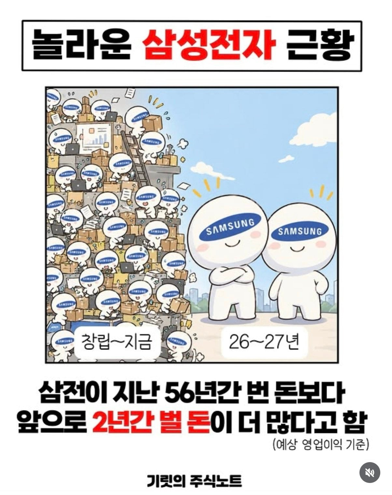

근데 주가는 왜..

근데 주가는 왜..
앞으로 2년동안 벌 돈도 그냥 추정치 아님?
추정치지 확정이겠냐
근데 2년이상 장기계약 다 해서 추정이랑 비슷할듯

사실 주가는 주주들이 매매하면서 결정하는거라 뭐
아라사카
대기업 사내유보금이 100조가 넘는다고 재투자 안 한다고 난리쳤는데
한 분기에 100조씩 벌고 있음...
당한게 있어서 유보금 안푸는것도 이해는감ㅋㅋ 회사 터질뻔 햇으니
걔네가 유보금 풀라했을때 풀었으면 치킨게임할때 회사 망했을듯
주가 왜 올랐잖아? ㅋㅋㅋㅋ
주주환원이 첫 번째 여야하는데
세습경영에 직원들끼리 나눠먹기 바쁘니까
주가가 오를리가 있나
처음 상장할때 풀베팅해놓고 몇십년만 기다리면되는건데.. 늦게 태어나는 바람에 그걸 못했네
건실하게 ETF나 살걸 ..
진리의 킹반영
26,27년이랑 비교하면 보잘 것 없지만 이미 10년전부터 일본 전자회사 6개 합친것보다 많이 벌고 있을걸
8만원이 정가라니까 ㅋㅋㅋ
삼전 숏에 풀로 박고 인생역전 ㄱㄱ
그럼숏쳐
물량없다는 이유로 가격 존나올렸는데, 이거 나중에 쎄게 되돌려받을듯;; 꼬우면 사지말라면서 3배~4배 올리는게 맞냐? 얼마나 업보빔 맞을지 감도 안옴
무슨 비난 사태에 사람들 죽던 말던 생필품을 비싸게 파는것도 아니고 기호 물품을 수요와 공급에 맞춰파는건데 업보는 무슨
저러면서 보통 재투자로 계속 안사면 꼬울 제품을 만들어내는게 탑 기업들임
?? 그런 논리면 애플은 이미 망했어야 해요. 걔들이 먼저 업보 쌓아서 이 난리 난 겁니다. 반도체 증설 왜 못했는지 뉴스 찾아보세요.
뭔 말도 안되는 소리냐. 독점을 하길 했냐. 과점을 하길 했냐. 생필품도 아니고 최첨단 기술 제품을 수요에 맞춰 파는 건데.. 어떻게 이런 생각을 할 수 있지? 아쉬우면 엔비디아처럼 장기 계약을 해서 엄청나게 오르기 전에 싸게 대량 계약했어야지.
나도 그럴꺼라고 봄
여태까지는 서로 말이 통하는 3사가 사이좋게 나눠먹기만 하는 평화로운 시장이라서 비싸게 팔아도 사줄수밖에 없었지만 중국이라는 변수가 너무 빠르게 크고 있고 또한 사이클은 반드시 하락세가 오기 마련인데 그때 업보빔 씨게 맞을 가능성 클꺼같음
갬동이 없음
불쾌했어요
2년전 주가를 보고 오도록
주주환원을 안 하니까 주가가 그 모양이지
회사만 돈 잘 벌면 뭐함 주주는 호구야?
2Y Forward PER
주가가 몇배가 됐는데.....
물론 난 최고점에 물려있다